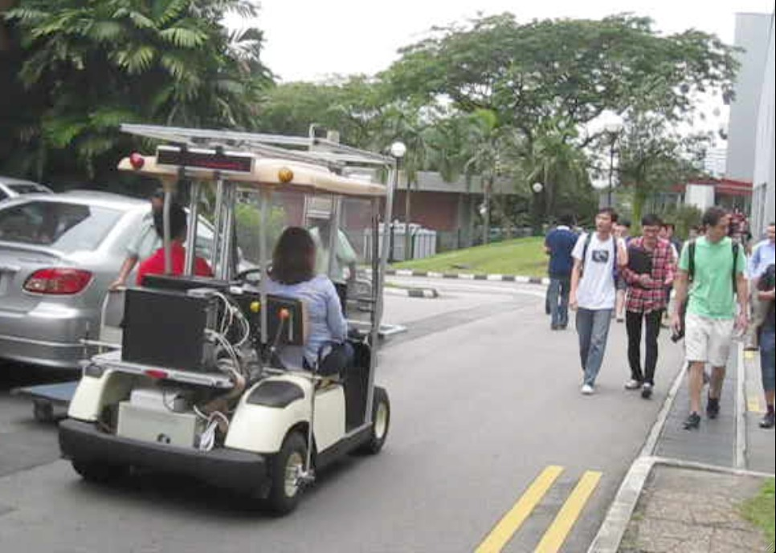
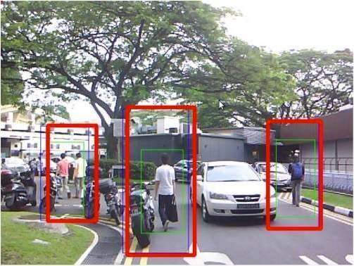

Autonomy for Mobility on Demand Systems
Pedestrian Detection
For autonomous navigation, we need to pay special attention to dynamic objects, like pedestrians and other vehicles on the road in addition to static environmental features like kerbs, drains, traffic lights, etc. Usually the presence of static objects are known a-priori from a traffic database or built during an initial phase in an offline manner. However, dynamic objects on the road can only be handled while the autonomous vehicle is driving. Pedestrians, as a key factor in a campus environment, deserve more attention.
|  |  |
| The picture shows a typical environment of a campus scene (NUS) where the autonomous vehicle has to navigate in the presence of various kinds of vehicles, and numerous pedestrians on the road. | Using combination of vision and range sensors, we can robustly detect pedestrians among clutter of motor cycles as well as other vehicles on the road. |
On-board cameras are one of the most effective ways of identifying objects in the environment. However, the computation requirement and dependence of ambient light conditions limit their utility. Alternatively, laser based approaches can detect the presence of an object more reliably but have problem disambiguating different types of objects. In the autonomy group, we built an onboard pedestrian detection system by hierarchical fusing of a planar LIDAR and a simple off the shelf webcam properly calibrated. We combine the advantages of LIDARs in detecting an object with the simplicity of disambiguating objects from the camera images. It proves to be fast, computationally efficient and robust in our operations.
| A test run by the autonomous platform while detecting and responding to pedestrians and vehicles on the road. The right screen shows the onboard online detection and the left is the vehicle depiction in ROS visualizer. |
Avoidance Strategies
We perform obstacle avoidance in a very simple hierarchical manner. For any obstacle detected on the road within a predefined critical proximity distance, the vehicle slows down to let the obstacle move away from critical distance. Beyond this distance, we apply specific models for dynamic obstacles and adopt an intention based avoidance strategy. We have shown results for pedestrian avoidance and are currently working towards dealing with other vehicles on the road.Naturally, in the absence of a resonable classification of the dynamic objects, we apply a conservative approach of slowing down to a stop.
In situations where pedestrians cannot be detected due to environmental occlusions, our approach is to utilize existing infrastructure sensors to aid in pedestrian avoidance.
Relevant Publications
- Z. J. Chong, B. Qin, T. Bandyopadhyay , T. Wongpiromsarn, E. S. Rankin, M. H. Ang Jr., E. Frazzoli, D. Rus, D. Hsu and K. H. Low. Autonomous Navigation in Crowded Campus Environments. In IROS Workshop on Perception and Navigation, 2011.
- Z. J. Chong, B. Qin, T. Bandyopadhyay, T. Wongpiromsarn, E. S. Rankin, M. H. Ang Jr., E. Frazzoli. D. Rus, D.Hsu and K. H. Low, Autonomous Personal Vehicle for the First- and Last-Mile Transportation Services. IEEE International Conference on Robotics, Automation and Mechatronics, RAM-2011.